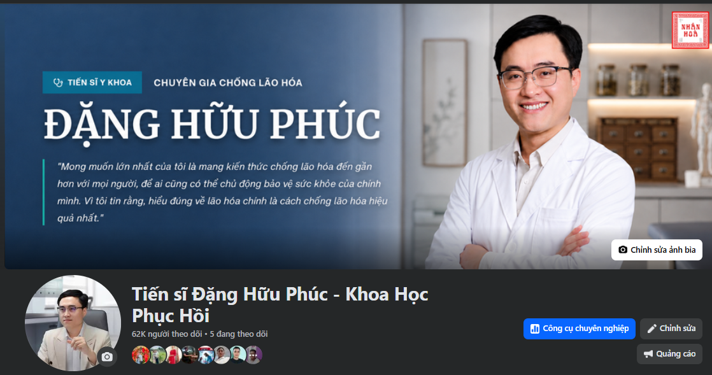

Tập trung vào chuyển đổi thay vì chỉ kéo view
Content đào sâu pain-point khách hàng, chuẩn hóa công thức A4 và tối ưu kịch bản theo tín hiệu tin nhắn, bình luận, nhu cầu mua.

Báo cáo tháng | 1 tháng 5 - 31 tháng 5
Tóm tắt các cải tiến vận hành, điều chỉnh quy trình, bài học và thành tựu kênh trong tháng 5.
Viết mô tả, thẻ hashtag và đăng video lên kênh.
DEST 100% OK02.2
Trước đây content phải chụp từng màn hình rồi gửi vào Zalo. Hiện tại mọi người review trực tiếp trên ELMA, chỉ rõ đoạn nào cần sửa và thao tác giữa content - edit gọn hơn.


02.3
Team bổ sung bước dùng AI Consensus.app để đối chiếu thông tin khoa học, giúp nội dung chắc hơn và giảm tình trạng hổng kiến thức trong một kịch bản.

03
Sai lầm tháng 5 là team đã sử dụng source video của Bác sĩ Nguyễn cho một video tuyến A4, khiến fan của Bác sĩ Nguyễn nhắn chất vấn việc team đã xin phép hay chưa.
Video thuộc tuyến A4 nên có yếu tố sản phẩm/chuyển đổi. Khi dùng source từ creator Việt Nam mà chưa kiểm quyền dùng, người xem có thể chất vấn và ảnh hưởng trực tiếp đến uy tín kênh.

Team chưa tách rõ source tham khảo, source được phép dùng và source Việt Nam có rủi ro bản quyền/nhận diện creator.
Fan của Bác sĩ Nguyễn nhắn chất vấn việc đã xin phép chưa, tạo rủi ro uy tín trong một video đang chạy mục tiêu A4.
Vì A4 gắn với chuyển đổi, team thống nhất không lấy source Việt Nam; chỉ dùng source đã rõ quyền, rõ ngữ cảnh và an toàn cho thương hiệu.